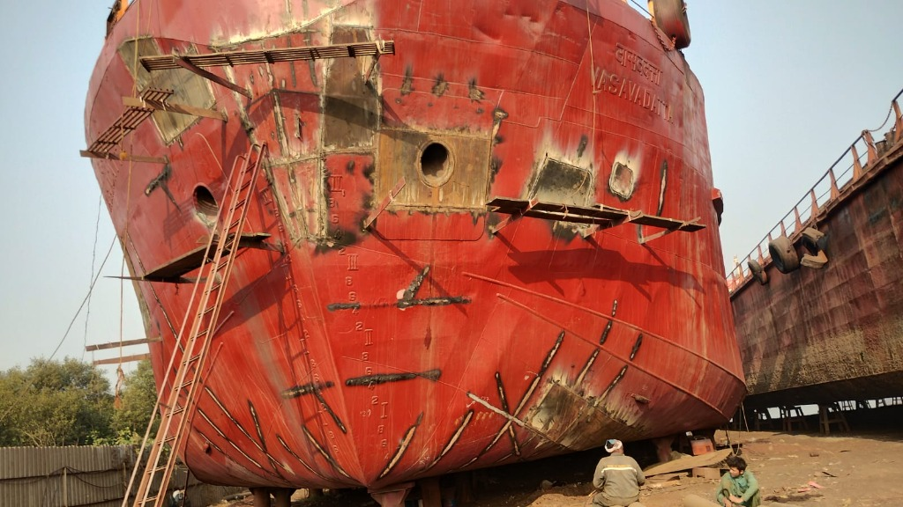
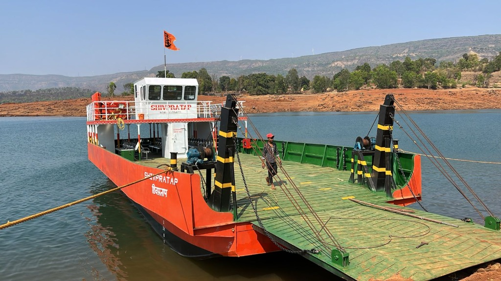
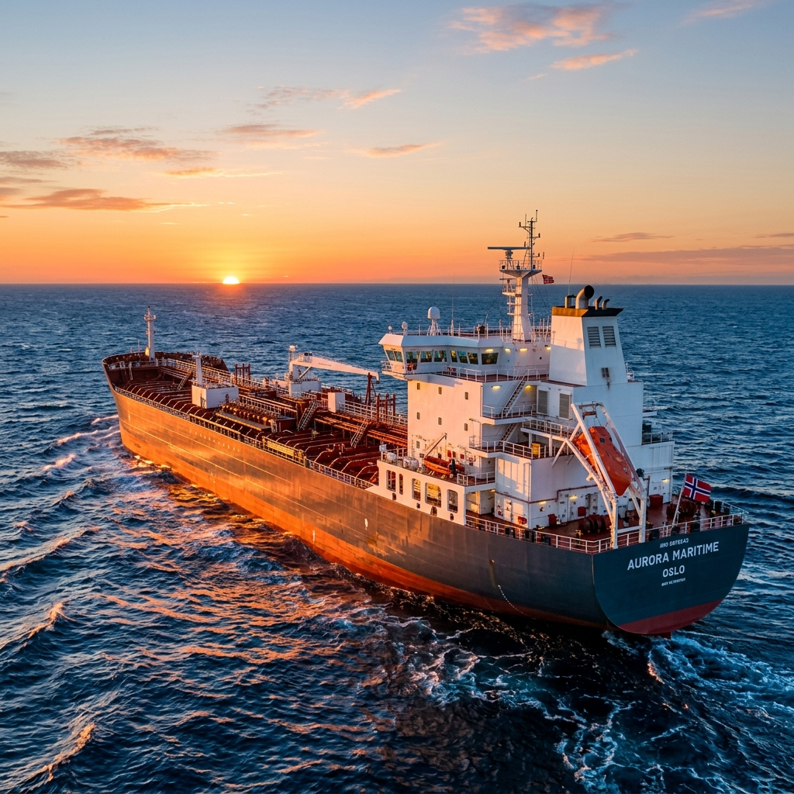

Capabilities
New Build Construction
Lothal Marine builds customized commercial vessels designed for efficiency and durability. We handle the entire shipbuilding process in-house: from initial steel cutting and assembly to mechanical outfitting, launching, and sea trials.
Our shipbuilding specialties include:
- Harbor Tugs: Powerful twin-screw vessels engineered for escort operations.
- Deck Cargo Barges: Heavy-duty barges with reinforced decks for aggregate, machinery, and container logistics.
- Utility Workboats: Fast-maneuvering vessels for offshore crew changes and harbor support.
- Pontoons & Floating Structures: Custom-designed marine platforms and dredging support pontoons.
Dry Docking & Repairs
Hull, Piping & Machinery Repairs
We provide comprehensive repair services to drydocked and afloat vessels. Our repair crews operate 24/7 to minimize drydock timelines and get vessels back in operation.
Our repair services include:
- Hull Maintenance: Hydro-blasting, sand-blasting, and marine-grade painting.
- Steel Renewals: Replacement of rusted shell plates, frames, and bulkheads verified by ultrasonic thickness gauging.
- Piping Systems: Fabrication and installation of seawater ballast pipes, fuel lines, and deck plumbing.
- Mechanical Repairs: Overhauling main engines, auxiliaries, propellers, shafts, rudders, and steering gear.


Design & Consultancy
Marine Engineering & Naval Architecture
Lothal Marine houses a dedicated marine consultancy department. We coordinate directly with class surveyors (such as IRS, ABS, BV, and Lloyd's Register) to secure approval for new designs and structural modifications.
We provide:
- Conceptual drawing and hull lines optimization.
- Intact and damage stability calculation booklets.
- Structural steel drawings and weight estimates.
- Class documentation approval and registry compliance support.
Operational Shipyards on the West Coast
Lothal Marine Private Limited is presently carrying out ship repair, barge building, and maintenance works at the following strategic yards on the West Coast of India.
Chougule Shipyard Private Limited
Lavgan, Near Jaigarh Port | Ship Lift Facility
This state-of-the-art facility has the capability to dry dock vessels up to 20,000 DWT using its advanced ship lift system.
At this yard, Lothal Marine is actively providing docking, repair, and maintenance services to the **Indian Navy**, **Indian Coast Guard**, and several commercial ship-owning companies. Our crews have successfully completed repair works on offshore rigs for **ABAN Offshore Limited** and various merchant vessels.
Maldar Shipyard Private Limited
Reti Bunder, Belapur | Shallow Draft & New Builds
Ideally situated for carrying out new builds, conversion projects, and docking of shallow drafted vessels.
Since 2015, Lothal Marine has utilized leased land at this yard to execute complex vessel conversion projects. We also provide full dry docking support, steel renewal, grit blasting, painting, and other marine services for a wide variety of vessels.